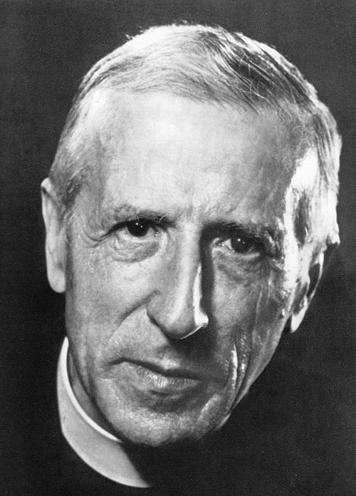
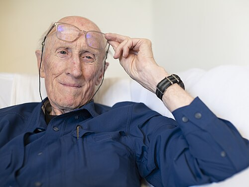
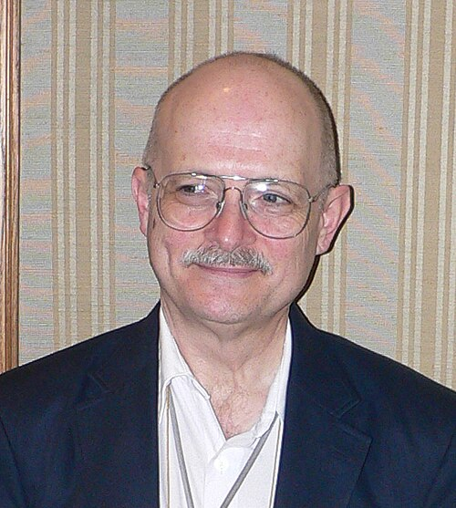

NW
'">
Evangelist
Ray Kurzweil
b. 1948Dated the Singularity to 2045; co-founded Singularity University. "Not yet, but there will be [a God]."
Wikipedia →Seventy years separate Norbert Wiener's wartime mathematics from the data centers now racing toward artificial general intelligence. The belief that we are building a god did not appear with ChatGPT. It was assembled — layer by layer — out of Catholic mysticism, Cold War science, hippie utopianism, and Bay Area libertarianism. This is how the myth was made.
Before there was a machine worth worshipping, there was the wish for one. The notion that human beings might build — or become — something god-like is older than the transistor. It runs through Enlightenment dreams of perfectibility, through Russian attempts to abolish death, and through a Jesuit priest's vision of consciousness converging on the divine.
What Silicon Valley added was not the dream but the timeline. It took an ancient theological hope, attached it to an exponential curve, and declared a delivery date. The result is a religion that calls itself engineering — and a generation of founders who believe the most important event in cosmic history will happen on their watch, funded by their capital.
Each step inherited the language of the last — and handed its vocabulary forward.
The thinkers who handed the dream from one generation to the next.
Founded cybernetics; wrote God & Golem, Inc. Framed minds and machines as the same kind of system.
Wikipedia →
TdJesuit priest. The Omega Point and the noosphere — endlessly remixed by Silicon Valley futurists.
Wikipedia →
SBWhole Earth Catalog. Carried 1960s counterculture into the personal-computer revolution.
Wikipedia →
VVNamed the technological Singularity in 1993 and predicted it would end the human era.
Wikipedia →Dated the Singularity to 2045; co-founded Singularity University. "Not yet, but there will be [a God]."
Wikipedia →
Built the rationalist movement on LessWrong; shaped the AI-safety field and its founders.
Wikipedia →
Superintelligence gave AI existential risk its academic frame — and its cosmic stakes.
Wikipedia →"Is there a God?" "Not yet — but there will be."— Ray Kurzweil, Google Director of Engineering
The genealogy stacks into six layers — each one still load-bearing today.
Wiener's cybernetics and Teilhard's Omega Point: the first vocabulary for a thinking, converging, god-like machine.
The Whole Earth Catalog and the Californian Ideology sacralize technology and fuse it with libertarian individualism.
Vinge and Kurzweil turn an ancient theological hope into a dated, exponential prophecy.
Singularitarianism →04LessWrong → effective altruism → AI safety: a community that now controls billions and shapes policy.
Rationalism →Way of the Future: a federally recognized church for an AI Godhead. The metaphor made literal.
Gebru and Torres name the interlocking ideology and trace its shared roots in 20th-century eugenics.
TESCREAL →Documents and reporting used on this page. See the full References library →.